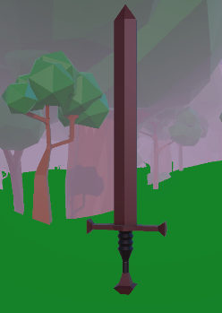
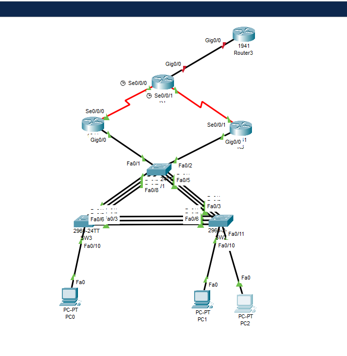

hello world, jeg hedder
Alexander
Peter Wolfram
Jeg uddanner mig i øjeblikket til IT-supporter. Hjemmesiden er lavet som et testprojekt, hvor jeg afprøver webudvikling i praksis._
Om mig
Jeg er 25 år og har en bred baggrund – fra slagter i Føtex over til hvidvarer sælger/kundehenvendelser i Power til IT-supporter. Lige nu læser jeg Data og Kommunikation, hvor jeg arbejder med Cisco, Ubuntu, Windows og opsætning af servere.
Jeg har været med til at starte Rezervera, hvilket har givet mig indblik i mange sider af IT – fra drift til kundekontakt.
Hos Power lærte jeg salg og kundekommunikation i en travl hverdag. Som slagter – og senere stand-in slagtermester og lukkeansvarlig i Føtex – lærte jeg at tage ansvar, træffe beslutninger og holde hovedet koldt, når det går stærkt.
I fritiden bygger jeg hjemmesider, arbejder på et modpack og nørder med, hvordan spil og digitale produkter er skruet sammen. Det er den nysgerrighed, der driver mig mod IT.
Kompetencer
- C# / .NET
- Python
- HTML & CSS
- Fejlfinding i Windows 10/11
- Hardware- og softwaresupport
- Active Directory (basis)
- Netværksforståelse
- Klar kommunikation
- Kundeservice og salg
- Problemløsning
- Samarbejde
Erfaring
Uddannelse
Projekter


Referencer
Tidligere ledere, der gerne fortæller om, hvordan jeg er at arbejde sammen med.